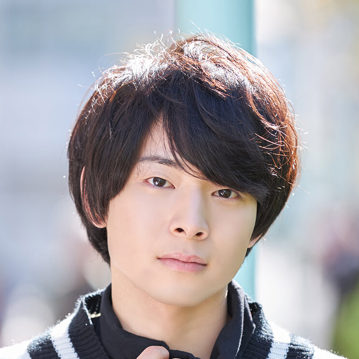

【声マガ・インタビュー】市川 太一
TOPICS
PROFILE
ヴィムスに所属する市川太一さんは、東京都出身の2月4日生まれ。『カブキブ！』（来栖黒悟役）、『メジャーセカンド』（卜部隼人役）、『ヒナまつり』（ケンゴ役）、『やがて君になる』（槙聖司役）等に出演。
子どもの頃、お母さんのお手伝いをきっかけに、お菓子作りの楽しみを知った市川さん。ガトーショコラやチーズケーキ等を作り、時には友人のお祝い事の際にプレゼントすることもあるのだとか。そんな心優しい市川太一さんに、声優をめざしたきっかけと日本ナレーション演技研究所（以下、日ナレ）で学んだことや、今後の目標についてお話していただきました。
ラジオパーソナリティになりたくて声優の道へ
声優という仕事を意識したのはいつ頃ですか？
高校2年生の時です。試験勉強中に聞いていたラジオ番組のパーソナリティが、声優の方だったのですが、それがこのお仕事を意識したきっかけでした。その前から声優という職業は知ってはいましたが、どのような人たちが、どのような内容の仕事をしているかまでは知りませんでした。
アニメ作品ではなく、ラジオ番組を通して声優に興味を持ったということですね？
そうです。幼い頃からアニメも漫画も好きな方でしたが、自分で演じてみたいとは思っていませんでした。それ以上に小中高と兄の影響で始めたバスケットボールにずっと打ち込んでいたので、本格的に声優に興味を持ったのは、高2のこの時が初めてだったと思います。当時の僕はあくまで自分のラジオ番組を持って、パーソナリティを務めるために声優になりたいと思っていたので、どなたがどのアニメのキャラクターの声を担当しているのか、といったことに意識がいくようになったのは日ナレに入所してからでした。そういう意味では、アニメ作品の影響を受けて声優をめざす人が多い中、ちょっと異質なタイプの受講生だったかもしれません。
では日ナレを選んだ理由を教えてください。
大学に進学したら声優への道を志すと決めていたのですが、どうやったらなれるのかさっぱりわかりませんでした。そこで「声優養成所」とネットで検索したら、最初に名前が出てきたのが日ナレでした（笑）。また週1回のレッスンなら大学に通いながら両立も可能ですし、受講料も自分で工面すると決めていたので、経済的な面からみても日ナレは魅力的でした。
実際に入所してみていかがでしたか？
入所したのは大学2年生の時だったんですが、何かを演じる、人前に立って表現する、という行為が正直恥ずかしかったです。またエチュード(即興劇)のレッスンでは、どう演じていいのかわからず少し戸惑いました。基礎科では1年目ということもあって、発声方法をひたすら勉強するものだと勝手に想像していたので「え、いきなり演技をするの？」という驚きがありました。でも、恥ずかしかったことより「1年目からお芝居のレッスンができるんだ！」という喜びの方が大きかったです。また、基礎科の講師の方のおかげで、演じることが恥ずかしいという感情を払拭することができました。僕自身、演じているうちに「次はもっとこうしてやろう」とか「次はクラスのみんなを笑わせてやろう」という欲が自然と湧いてきたんです。
お芝居をすることの楽しさを知ることができた1年だったということですね。では、当時のライフサイクルを教えていただけますか？
平日は大学とアルバイトに、そして週末は日ナレに通っていました。
忙しいとは感じませんでしたか？
声優は高校2年生の時からめざしていた目標でしたから、やっと好きなことに打ち込めるという喜びと「声優になるんだ！」という必死な気持ちが強くて、忙しいとは感じませんでした。ただ、大学の同級生には自分が声優をめざしていることを一切話していなかったので「市川を遊びに誘っても、常に予定を空けてくれない。いったい週末に何をしているんだ？」とぼやかれたことがありました（笑）。
体で表現することの大切さを学んだ本科のレッスン
本科では、舞台形式を意識した演技レッスンになったと思いますが、いかがでしたか？
舞台の上でどのように動いたらいいのかわからなくて、とても悩みました。また、セリフを言うことばかりに意識を持っていかれるあまり、体で表現することがおろそかになっていました。心と体がつながっていない、そんなチグハグなところが自分にとって大きな課題でした。
どうやってその課題を克服したのですか？
とにかく映像になっている作品も含めて、可能な限り多くのお芝居を観るようにしました。そうやって必死に演技を学んでいくうちに、ようやく体で伝えることの大切さを学ぶことが出来たように思います。
その時、ご自身で成長を実感することはできましたか？
うーん、周囲の方々から褒めていただけた時は「そうなのかな」と思いましたが、当時はあまり実感できなかった、というのが正直なところです。むしろプロの現場に立つようになった現在の方が、この時の経験がいかに大切だったのかを実感しています。
どのようなところが？
人によっては「声優なのになぜ舞台で演じる必要があるのか？」と思う人がいるかもしれませんが、舞台での表現はマイク前のお芝居としっかりつながっていると僕は思っています。なぜなら、映像の中のキャラクターは動きながら、体を使いながらお芝居をしているので、実際に演じる僕たちがしっかり体を使ってセリフを言えるようにしておかないと、説得力が薄くなってしまうと思うんです。プロになった今、日ナレで体を動かしながらお芝居をすることの大切さを教えていただけたことは、大きな財産になっています。
研修科のレッスンで印象に残っていることはありますか？
講師の方からマイク前での演技について、とても具体的に細かく指導していただきました。以前の僕は大切なセリフの前に、一度ブレスをしてからその後のセリフを言う、つまり観ている方の印象に残るような組み立てでお芝居をしていたのですが、講師の方から「そんなに一呼吸置いてしまうと、わざとらしく見えるよ。普段、人は大切なことを言う前だからといって、そんなに間は空けないよね」という指摘を受けたんです。確かに、よりリアルな演技を意識するならば、普段の話し方のニュアンスを大切にするべきだと気づかせていただき、とても勉強になりました。
事務所に所属したのはいつのことですか？
基礎科1年目の所内オーディションでヴィムスに所属しました。とても嬉しかったのですが、まだ基礎の勉強もしっかりできていないし、台本のチェックの仕方も分からない状態だったので正直不安でした。
デビューはいつですか？
事務所に入って1カ月後くらいです。いわゆるガヤと呼ばれるその多大勢の役だったのですが、とても緊張しました。ブースの中では音を立てられないので、ページをめくるのもこれ以上ないというくらい慎重にやっていました。この現場では幸いなことに同じ事務所の先輩がいらしたので、とても心強かったです。
初めてメインキャラクターを演じたアニメ作品を教えてください。
『カブキブ！』という作品の来栖黒悟という役をやらせていただいたのが初めてです。初のメインに選んでいただいたということもあって、プレッシャーは尋常ではありませんでした。そのうえ来栖という役が、よくしゃべるキャラクターだったので、「絶対にやりきる！」という気持ちが一段と強くなってしまい、収録の間ずっと前のめりでした。
現場の雰囲気はいかがでしたか？
とても良い現場で、多くの先輩方に、休憩中アドバイスをいただく等、自分の足りないところを補っていただきました。現場に入った当初の僕は、映像にセリフを合わせにいってしまうところがありました。自分の役のボールド※が出た時に「セリフを言わなきゃいけないんだ」という、凝り固まった考えに支配されていたおかげで、先輩がセリフを言い終わらないうちに自分のセリフを重ねて言ってしまうことがあったんです。そんな時、僕に音響監督さんが「お芝居は掛け合いが大切だから、ボールドを気にしすぎなくてもいいよ」とアドバイスしてくださいました。それからは収録の際、常にいただいたアドバイスを意識しながら演じるように心がけました。最終的には音響監督さんから褒めていただけるようになったのですが、この時は本当に嬉しかったですね。
キャラクターにとことん向き合って見つけた答え
市川さんの中で、声優という仕事の面白さを発見させてくれた、そんな作品やキャラクターがあったら教えてください。
『メジャーセカンド』という野球をテーマにした作品と、その時に演じた卜部隼人という役です。当初、この卜部という役を演じることになった時、自分がそれ以前に演じてきた役とあまりにかけ離れていたので、とても悩みました。卜部は主人公のライバルで、一言で言ってしまえば、嫌味な性格の悪いヤツなのですが、収録当初はそのキャラクター性を演じきれなくて、音響監督さんからは「もっと（悪く）やっていい」と幾度も指導をいただきました。なので、収録中はどうやったら卜部がより悪くみえるか、嫌味なヤツだと思ってもらえるか、とことん考え抜きました。この時ほど自分が演じるキャラクターに向き合ったことはないかもしれません。
納得のいく答えにたどり着けましたか？
はい。彼は、確かに嫌味で悪いヤツだと思われても仕方のない言動を繰り返しているのですが、それはあくまで表面上の振る舞いにすぎないと思えるようになってきたんです。彼は人一倍試合に勝ちたい、ライバルに勝ちたい、という気持ちが強い人物で、だから自分の思うようにいかない時、人にあたったり嫌味を言ったりしてしまうんじゃないか、と考えるようになりました。情熱的で負けず嫌いな性格だから、セリフの語気も上がるのだと解釈するようになってからは、自分の中にある情熱的で負けず嫌いな感情とも重なる部分があると思えるようになって、卜部というキャラクターに感情移入ができるようになりました。
声優という仕事ならではの醍醐味を味わった瞬間ですね。
そう思います。キャラクターの表面ではなく、その奥にある感情を見つけられると、たとえ同じセリフでも自然と表現が変わってくると思うんです。そしてその感情の源を発見できれば、表現の幅が広がるし、深い充実感を味わうこともできると、この作品を通して学ぶことができました。
ご自身の考える声優という仕事の魅力は何だと思われますか？
日々勉強ができる。自分に足りないものと自分が得たいもの、そしてそのために何をしなくてはいけないのか、という課題を毎日のように見つけることができる仕事だと思います。ですから何事も突き詰めたい人には、ピッタリの仕事なんじゃないでしょうか。
お話をお伺いしている限り、市川さんは突き詰めたい派ですよね？
はい。かなり、だと思います（笑）。僕自身とても凝り性なので、この仕事に就けて本当に良かったと思います。また、明確なゴールや正解がないので、大変な側面もあると思いますが、その分その人それぞれの答えを見つけて、各々の個性を出すことのできる職業だと思います。
今後の声優としての目標を教えてください。
「市川太一と言えばこの役」と誰からも思っていただける、自分の看板になるような役を演じることのできる声優になりたいです。
では最後に、声優をめざしている方にメッセージをお願いします。
アニメが好きだという興味以外にも、強い動機を持ってほしいです。もちろんアニメが好きであることは大切なことだと思うのですが、このお仕事は厳しい世界でもあるので、それだけでキャラクターを演じるのは難しいと思います。真剣に声優をめざしているのなら、目の前にある課題に集中して、必死に取り組んでみてください。
※ボールド：自分がセリフを言うタイミングになると画面上に出てくる役名が書かれたマークのこと
プロフィール
市川 太一
- 所属事務所
- ヴィムス
主な出演歴
- カブキブ！（来栖黒悟）
- やがて君になる（槙聖司）
- メジャーセカンド（卜部隼人）


{kind=link}
{kind=link}
{kind=link}
{kind=link}
{kind=link}
{kind=link}